Objectif : décrire sans a priori un tableau de données constitué exclusivement de variables quantitatives.

Cette méthode permet de résumer l’information et d’en réduire la dimensionnalité.
07/02/2019
## Loading required package: knitr
## Loading required package: png
## Loading required package: grid
## Loading required package: FactoMineR
## Loading required package: factoextra
## Loading required package: ggplot2
## Welcome! Want to learn more? See two factoextra-related books at https://goo.gl/ve3WBa
## Loading required package: corrplot
## corrplot 0.84 loaded
## Loading required package: tidyverse
## ── Attaching packages ────────────────────────────────────────────────────────────────────────────── tidyverse 1.3.0 ──
## ✓ tibble 3.0.1 ✓ dplyr 1.0.0 ## ✓ tidyr 1.1.0 ✓ stringr 1.4.0 ## ✓ readr 1.3.1 ✓ forcats 0.5.0 ## ✓ purrr 0.3.4
## ── Conflicts ───────────────────────────────────────────────────────────────────────────────── tidyverse_conflicts() ── ## x dplyr::filter() masks stats::filter() ## x dplyr::lag() masks stats::lag()
## Loading required package: gridExtra
## ## Attaching package: 'gridExtra'
## The following object is masked from 'package:dplyr': ## ## combine
Objectif : décrire sans a priori un tableau de données constitué exclusivement de variables quantitatives.
Cette méthode permet de résumer l’information et d’en réduire la dimensionnalité.
L’ACP permet de déterminer les espaces de dimension inférieure à l’espace initial :
L’ACP permet de conserver au mieux la structure de corrélation entre les variables initiales
Le principe de l’ACP :


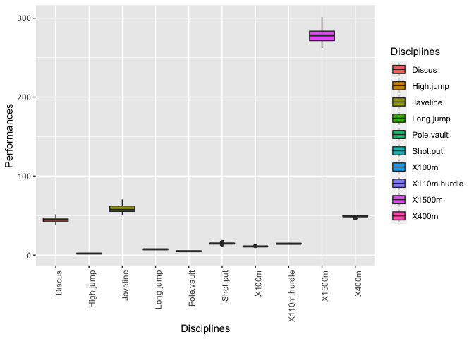
scale() : \(\frac{x_{i} - mean(x)}{sd(x)}\)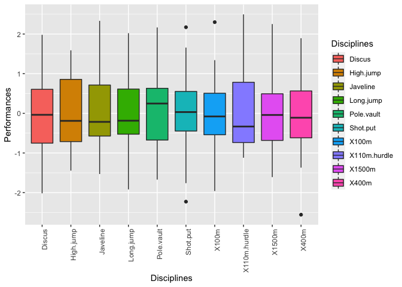
library("FactoMineR")
library("factoextra")
PCA(X, scale.unit = TRUE, ncp = 5, graph = TRUE)
data(decathlon2) res.pca = PCA(decathlon2[, 1:10], graph = FALSE)
Le résultat de la fonction PCA() est une liste, contenant les éléments suivants :
res.pca
**Results for the Principal Component Analysis (PCA)** The analysis was performed on 27 individuals, described by 10 variables *The results are available in the following objects: name description 1 "$eig" "eigenvalues" 2 "$var" "results for the variables" 3 "$var$coord" "coord. for the variables" 4 "$var$cor" "correlations variables - dimensions" 5 "$var$cos2" "cos2 for the variables" 6 "$var$contrib" "contributions of the variables" 7 "$ind" "results for the individuals" 8 "$ind$coord" "coord. for the individuals" 9 "$ind$cos2" "cos2 for the individuals" 10 "$ind$contrib" "contributions of the individuals" 11 "$call" "summary statistics" 12 "$call$centre" "mean of the variables" 13 "$call$ecart.type" "standard error of the variables" 14 "$call$row.w" "weights for the individuals" 15 "$call$col.w" "weights for the variables"
eig.val = get_eigenvalue(res.pca) eig.val
Les valeurs propres peuvent être utilisées pour déterminer le nombre d’axes principaux à conserver.
fviz_eig(res.pca, addlabels = TRUE, ylim = c(0, 50))
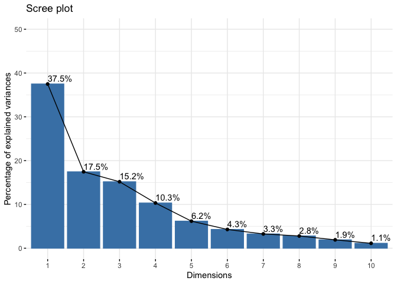
L’ACP permet d’étudier les liaisons linéaires entre les variables.
Les objectifs sont de résumer la matrice des corrélations et de chercher des variables synthétiques : peut-on résumer les observations par un petit nombre de variables ?
Dans notre exemple : les variables représentent les performances des athlètes dans chaque discipline
var = get_pca_var(res.pca) var
Principal Component Analysis Results for variables =================================================== Name Description 1 "$coord" "Coordinates for the variables" 2 "$cor" "Correlations between variables and dimensions" 3 "$cos2" "Cos2 for the variables" 4 "$contrib" "contributions of the variables"
Les composants de get_pca_var() peuvent être utilisés dans le graphique des variables comme suit :
# Coordonnées var$coord[1:3, 1:4]
Dim.1 Dim.2 Dim.3 Dim.4 X100m -0.8189521 0.3427787 0.100864539 0.10134200 Long.jump 0.7588985 -0.3814931 -0.006261254 -0.18542415 Shot.put 0.7150783 0.2821167 0.473854591 0.03610404
# Cos2: qualité de répresentation var$cos2[1:3, 1:4]
Dim.1 Dim.2 Dim.3 Dim.4 X100m 0.6706825 0.11749725 0.0101736553 0.010270201 Long.jump 0.5759270 0.14553701 0.0000392033 0.034382115 Shot.put 0.5113370 0.07958983 0.2245381732 0.001303502
# Contributions aux composantes principales var$contrib[1:3, 1:4]
Dim.1 Dim.2 Dim.3 Dim.4 X100m 17.88500 6.732718 0.670277238 0.9949816 Long.jump 15.35817 8.339426 0.002582856 3.3309545 Shot.put 13.63575 4.560583 14.793387670 0.1262838
fviz_pca_var(res.pca, col.var = "black")
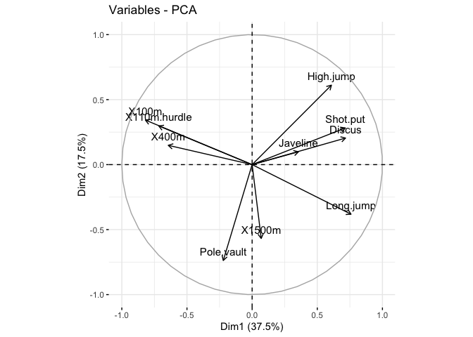
corrplot(var$cos2, is.corr=FALSE)
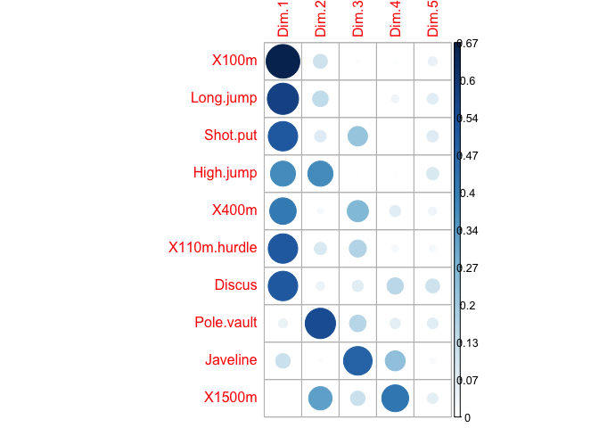
# Cos2 total des variables sur Dim.1 et Dim.2 fviz_cos2(res.pca, choice = "var", axes = 1:2)
# Cos2 total des variables sur Dim.1 et Dim.2 fviz_cos2(res.pca, choice = "var", axes = 1:5)
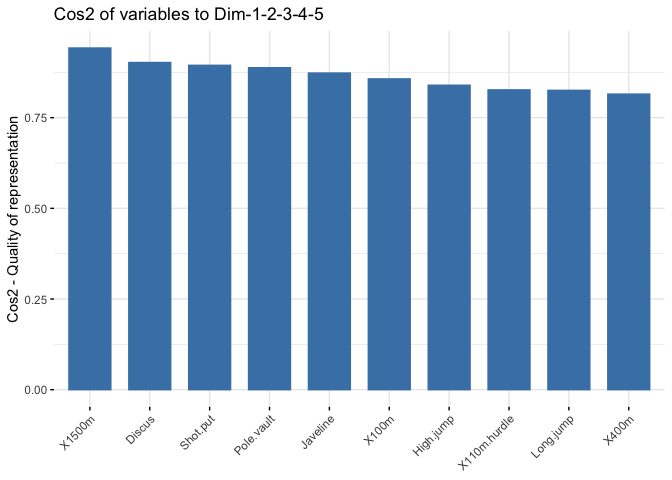
# Colorer en fonction du cos2 : qualité de représentation
fviz_pca_var(res.pca, col.var = "cos2",
gradient.cols = c("#00AFBB", "#E7B800", "#FC4E07"),
repel = TRUE # Évite le chevauchement de texte
)

head(var$contrib, 4)
Dim.1 Dim.2 Dim.3 Dim.4 Dim.5 X100m 17.88500 6.732718 0.670277238 0.9949816 7.81996 Long.jump 15.35817 8.339426 0.002582856 3.3309545 11.25620 Shot.put 13.63575 4.560583 14.793387670 0.1262838 12.56616 High.jump 9.87378 21.416504 0.001397716 0.4917303 14.62394
corrplot(var$contrib, is.corr=FALSE)
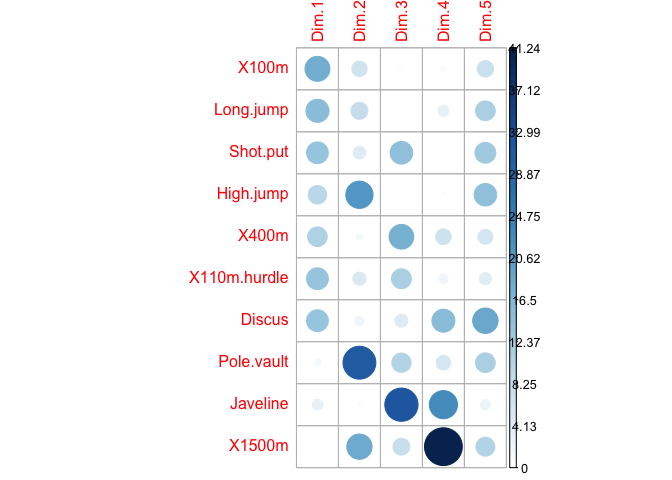
# Contributions des variables à PC1 fviz_contrib(res.pca, choice = "var", axes = 1, top = 10) # Contributions des variables à PC2 fviz_contrib(res.pca, choice = "var", axes = 2, top = 10)

Contribution moyenne attendue : Une variable avec une contribution supérieure à ce seuil pourrait être considérée comme importante pour contribuer à la composante.
La contribution totale à PC1 et PC2 est obtenue avec le code R suivant :
fviz_contrib(res.pca, choice = "var", axes = 1:2, top = 10)
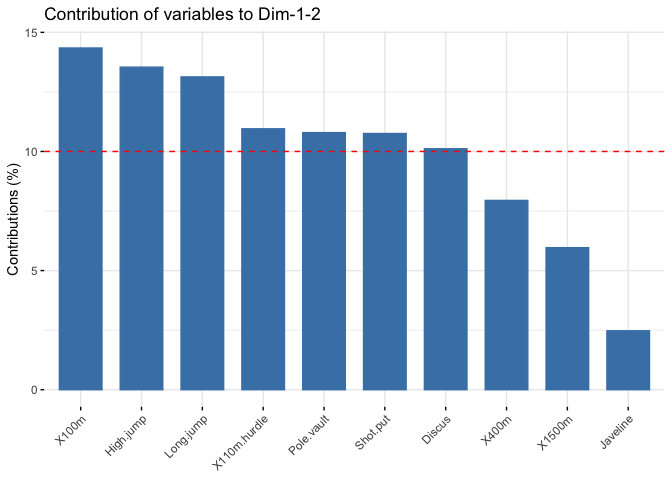
fviz_pca_var(res.pca, col.var = "contrib",
gradient.cols = c("#00AFBB", "#E7B800", "#FC4E07")
)
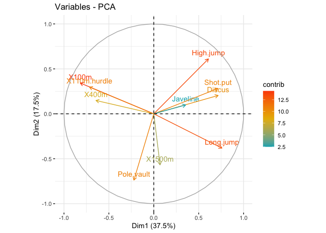
La fonction dimdesc() peut être utilisée pour identifier les variables les plus significativement associées avec une composante principale donnée :
res.desc = dimdesc(res.pca, axes = c(1,2), proba = 0.05) # Description de la dimension 1 res.desc$Dim.1
$quanti
correlation p.value
Long.jump 0.7588985 0.0000044696655
Discus 0.7168881 0.0000258693448
Shot.put 0.7150783 0.0000277085025
High.jump 0.6084933 0.0007579915942
X400m -0.6438482 0.0002904661206
X110m.hurdle -0.7164203 0.0000263340399
X100m -0.8189521 0.0000001769961
attr(,"class")
[1] "condes" "list "
# Description de la dimension 2 res.desc$Dim.2
$quanti
correlation p.value
High.jump 0.6113542 0.0007043348
Long.jump -0.3814931 0.0495907675
X1500m -0.5681197 0.0019922408
Pole.vault -0.7375479 0.0000113643
attr(,"class")
[1] "condes" "list "
Les variables sont triées en fonction de la p-value de la corrélation.
res.pca = PCA(decathlon2[, 1:12], quanti.sup = 11:12, graph = FALSE)
fviz_pca_var(res.pca, col.var = "cos2",
gradient.cols = c("#00AFBB", "#E7B800", "#FC4E07"),
col.quanti.sup = "blue",
repel = TRUE # Évite le chevauchement de texte
)
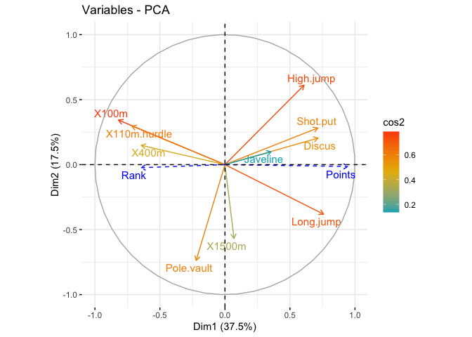
On peut également étudier la variabilité entre individus.
Y a-t-il des similarités entre les individus pour toutes les variables ? Peut-on établir des profils d’individus ? Peut-on opposer un groupe d’individus à un autre ?
Dans notre exemple : les individus sont les athlètes : deux athlètes sont proches s’ils ont des résultats similaires.
ind = get_pca_ind(res.pca) ind
Pour accéder aux différents éléments, utilisez ceci :
# Coordonnées des individus ind$coord[1:3, 1:4]
Dim.1 Dim.2 Dim.3 Dim.4 SEBRLE 0.2779582 -0.5364345 1.5852390 0.1058225 CLAY 0.9048536 -2.0942803 0.8406848 1.8507178 BERNARD -1.3722659 -1.3481155 0.9619317 -1.4930718
# Qualité des individus ind$cos2[1:3, 1:4]
Dim.1 Dim.2 Dim.3 Dim.4 SEBRLE 0.01544651 0.05753138 0.50241310 0.002238865 CLAY 0.06557423 0.35127414 0.05660346 0.274319687 BERNARD 0.23223664 0.22413434 0.11411498 0.274925838
# Contributions des individus ind$contrib[1:3, 1:4]
Dim.1 Dim.2 Dim.3 Dim.4 SEBRLE 0.07630746 0.6107062 6.132015 0.04018174 CLAY 0.80865774 9.3082618 1.724567 12.29002506 BERNARD 1.85987901 3.8570314 2.257887 7.99896372
fviz_pca_ind (res.pca, col.ind = "cos2",
gradient.cols = c("#00AFBB", "#E7B800", "#FC4E07"),
repel = TRUE) # Évite le chevauchement de texte
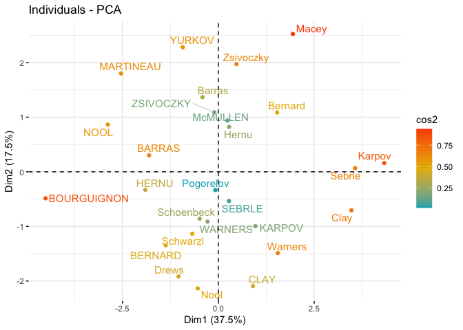
fviz_pca_ind (res.pca, pointsize = "cos2",
pointshape = 21, fill = "#E7B800",
repel = TRUE) # Évite le chevauchement de texte
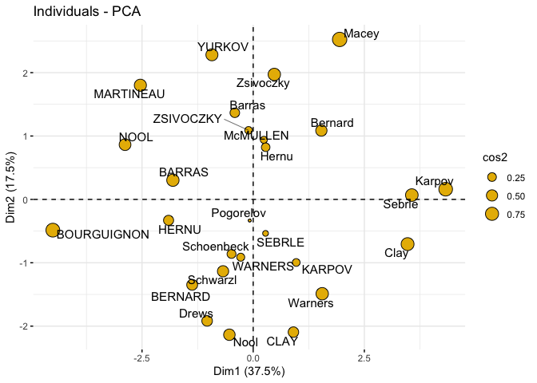
# Contribution totale sur PC1 et PC2 fviz_contrib(res.pca, choice = "ind", axes = 1:2)
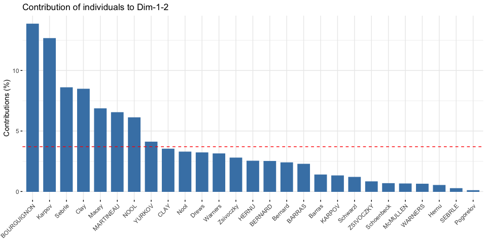
Permet de répondre à la question : peut-on caractériser des groupes d’individus par des variables ?
fviz_pca_biplot(res.pca, repel = TRUE,
col.var = "#2E9FDF", # Couleur des variables
col.ind = "#696969") # Couleur des individues
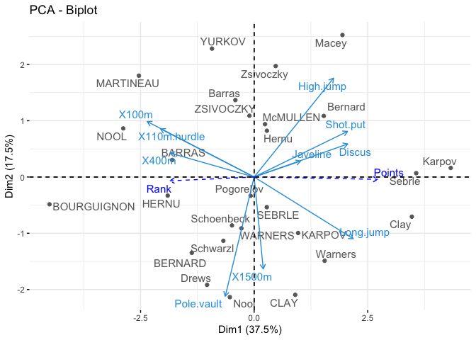
Le biplot n’est utile que s’il existe un faible nombre de variables et d’individus dans le jeu de données
Les coordonnées des individus et des variables ne sont pas construites dans le même espace.
\(\rightarrow\) se concentrer sur la direction des variables mais pas sur leurs positions absolues sur le graphique.
fviz_pca_biplot(res.pca, repel = TRUE,
col.var = "#2E9FDF", # Couleur des variables
col.ind = "#696969") # Couleur des individues
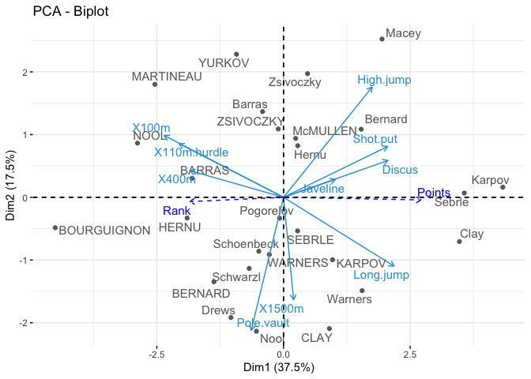
Un individu qui se trouve du même côté d’une variable donnée a une valeur élevée pour cette variable ;
Un individu qui se trouve sur le côté opposé d’une variable donnée a une faible valeur pour cette variable.
fviz_pca_ind(res.pca,
geom.ind = "point", # Montre les points seulement (mais pas le label)
col.ind = decathlon2$Competition, # colorer by groups
addEllipses = TRUE, # Ellipses de concentration
ellipse.level = 0.5,
legend.title = "Compétition")
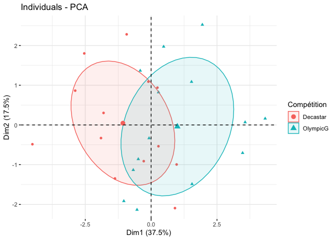
fviz_pca_ind(res.pca,
col.ind = decathlon2$Competition, # colorer by groups
addEllipses = TRUE, # Ellipses de concentration
ellipse.level = 0.5,
legend.title = "Compétition")
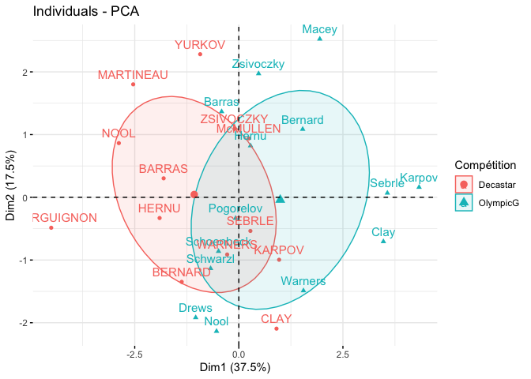